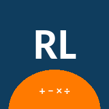
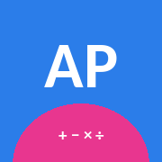
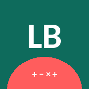

Apps de matemáticas
MOTO-MATES · Abre la de cada alumno en Safari y pulsa Compartir → Añadir a pantalla de inicio.

Rubén LópezMatemáticas 1.º ESO

Agustín PonceMis matemáticas de colores

Lucas BuckleyMaths · English + Español